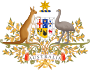
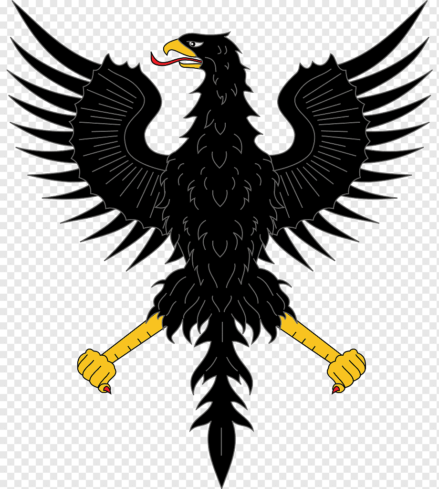

| Страны мечты |
| страна |
Австралия |
Германия |
Шотландия |
США |
| Флаг |
 |
 |
 |
|
| Столица |
Канберра |
Берлин |
Эдинбург |
Вашингтон |
| Герб |
 |
 |
 |
|
| Национальные символы |
 |
 |
|
|
| Краткое описание |
Австрали́йский Сою́з, или Содру́жество Австра́лии — государство в Южном полушарии, занимающее одноимённый материк, остров Тасмания и несколько других островов Индийского и Тихого океанов; является шестым государством по площади в мире. |
Федерати́вная Респу́блика Герма́ния, ФРГ (нем. BRD) — государство в Центральной Европе. Площадь территории — 357 408,74 км². Численность населения на 30 сентября 2019 года — 83 149 300 жителей. Занимает 19-е место в мире по численности населения и 62-е в мире по территории. |
Шотла́ндия (англ. и скотс. Scotland) — страна, занимающая северную часть Великобритании и формально являющаяся автономной административно-политической частью Соединённого Королевства Великобритании и Северной Ирландии. Занимает северную часть острова Великобритания и граничит по суше с Англией. Помимо территории на основном британском острове, Шотландии также принадлежат около 790 малых островов, большинство из которых необитаемы. |
Соединённые Шта́ты (англ. United States, U.S.) — государство в Северной Америке. Площадь — 9,5 млн км². Население — чуть более 336 млн человек. США — федеративная президентская республика, которая административно состоит из 50 штатов и федерального округа Колумбия. |
| Австралия |
Германия |
Шотландия |
США |
| Aleksei Kezerev JKTV22 |